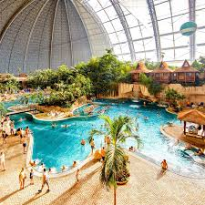
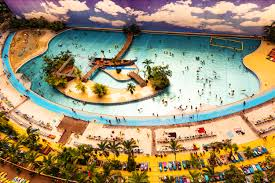
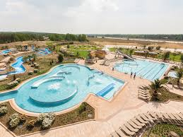
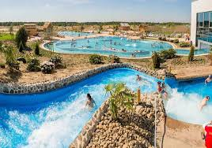

Stepping off the ferry onto Fire Island feels like entering another rhythm of life. With no cars allowed, the island invites you to slow down—walking along sandy paths lined with beach grass and weathered boardwalks. . The contrast between the lively beachfront and the quiet woodland makes the island feel like two worlds in one. Later, lounging by the lighthouse, they watched the sun dip low, painting the sky in hues of orange and violet—a reminder that sometimes the simplest moments are the most memorable. Fire Island isn’t just a park; it’s a pause button. The island offers a rare blend of adventure and serenity.


